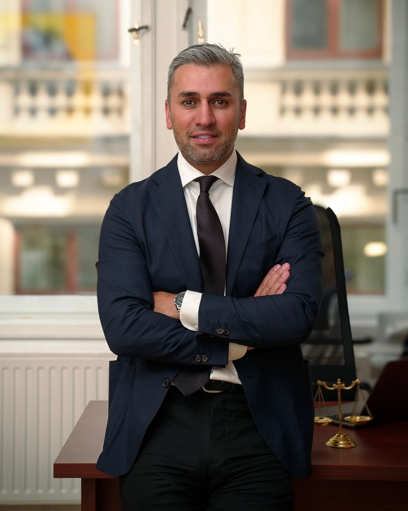

- Familienrecht
- Arbeitsrecht
- Erbrecht
Anwaltliche Vertretung in zentralen Rechtsgebieten mit klarer Strategie, direkter Kommunikation und rascher Erreichbarkeit.
Schnelle Reaktion, direkter Kontakt, diskrete Bearbeitung.

Rechtsgebiete
- Fremdenrecht & Staatsbürgerschaft
- Visaverfahren
- Verwaltungsrecht
- Strafrecht
- Sexualstrafrecht
- Suchtmitteldelikte
Premium-Begleitung
Staatsbürgerschaft Österreich - Professionelle Begleitung durch das gesamte Verfahren bei der MA35.
Bei uns ist jede Anfrage ein Premiumfall, daher umfasst das Pauschalhonorar die anwaltliche Begleitung des gesamten Verfahrens vor der MA35.
Wir unterstützen Sie von Anfang an und begleiten Sie während des gesamten Verfahrens vor der MA35.
Unsere Leistungen im Rahmen des Premium-Pakets:
- Umfassende Prüfung Ihrer individuellen Voraussetzungen für die Verleihung der österreichischen Staatsbürgerschaft
- Analyse Ihrer Einkommenssituation, Aufenthaltszeiten und sonstigen gesetzlichen Voraussetzungen
- Erstellung einer individuellen Unterlagenliste
- Prüfung sämtlicher Dokumente auf Vollständigkeit und rechtliche Relevanz
- Vorbereitung und Ausarbeitung des Staatsbürgerschaftsantrags
- Kommunikation mit der MA35 während des laufenden Verfahrens
- Beantwortung behördlicher Rückfragen
- Einbringung ergänzender Stellungnahmen und Unterlagen
- Laufende Begleitung bis zur behördlichen Entscheidung
- Persönlicher Ansprechpartner während des gesamten Verfahrens
Säumnisbeschwerde bei langen Verfahren
Warten Sie seit mehr als sechs Monaten auf eine Entscheidung der Behörde, insbesondere der MA35, kann eine Säumnisbeschwerde ein wirksamer Schritt zur Verfahrensbeschleunigung sein.
Wir übernehmen für Sie die anwaltliche Vertretung im gesamten Zusammenhang mit der Säumnisbeschwerde - von der Einbringung bis zur Erledigung.
Entscheidet die MA35 nach Einbringung der Beschwerde selbst, endet das Verfahren an dieser Stelle. Wird der Akt an das Verwaltungsgericht Wien vorgelegt, vertreten wir Sie auch im gerichtlichen Verfahren weiter.
Werden zusätzliche Unterlagen angefordert, bereiten wir die erforderlichen Eingaben vor und übermitteln die von Ihnen bereitgestellten Dokumente. Sollte eine mündliche Verhandlung stattfinden, bereiten wir Sie darauf vor und begleiten Sie zum Termin.
Nicht umfasst sind behördliche oder gerichtliche Gebühren, insbesondere die Eingabegebühr für die Säumnisbeschwerde.
Sonstige
Weitere Rechtsgebiete mit persönlicher Vertretung
Neben Staatsbürgerschafts- und Strafverfahren vertreten wir Sie auch in weiteren zentralen Rechtsbereichen.
Familienrecht
Scheidung, Obsorge, Kontaktrecht und Unterhalt - wir vertreten Ihre Interessen mit klarer Strategie und ruhiger Verhandlungsführung.
Arbeitsrecht
Kündigung, Entlassung, ausstehender Lohn oder Aufhebungsvereinbarung - wir prüfen Ihre Ansprüche und setzen sie konsequent durch.
Erbrecht
Verlassenschaft, Pflichtteil, Testament und Erbauseinandersetzung - wir schaffen rechtliche Klarheit und vertreten Sie im Verfahren.
Über die Kanzlei
Mag. Vadim Gusenov war über mehrere Jahre in einer Wiener Rechtsanwaltskanzlei tätig und konnte dabei umfassende praktische Erfahrung insbesondere in Strafrecht, Fremdenrecht, Staatsbürgerschaftsrecht, Familienrecht sowie allgemeinem Zivilrecht sammeln. Heute steht er seinen Mandanten mit engagierter Vertretung zur Seite.
Ausbildung & Qualifikationen
- Mag. iur. - Universität Wien, Rechtswissenschaftliche Fakultät
- Gerichtspraxis am Bezirksgericht Gänserndorf, Landesgericht für Strafsachen Wien und bei der Staatsanwaltschaft Korneuburg
- Rechtsanwaltsprüfung - Oberlandesgericht Wien
- Eintragung als Rechtsanwalt in Österreich
Sprachen: Deutsch, Russisch
Erstgespräch anfragenOnline Anfrage
Termin online sichern
Senden Sie Ihre Anfrage direkt online. Sie erhalten eine konkrete, persönliche Rückmeldung mit Terminvorschlag.
- Erstgespräch ausschließlich persönlich in der Kanzlei
- Rückmeldung meist am selben Werktag
Sofort anrufen unter +43 660 101 7777